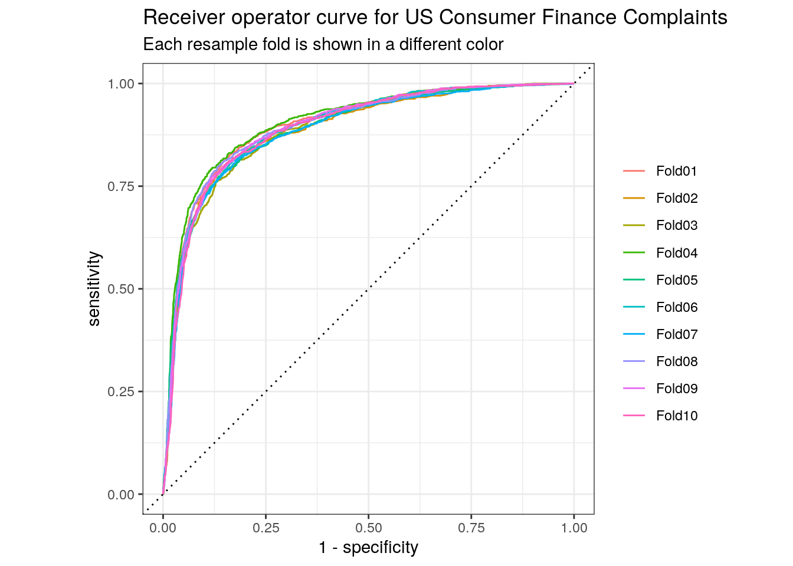
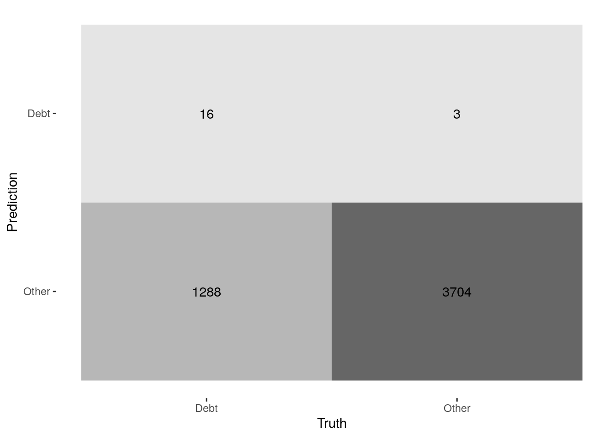
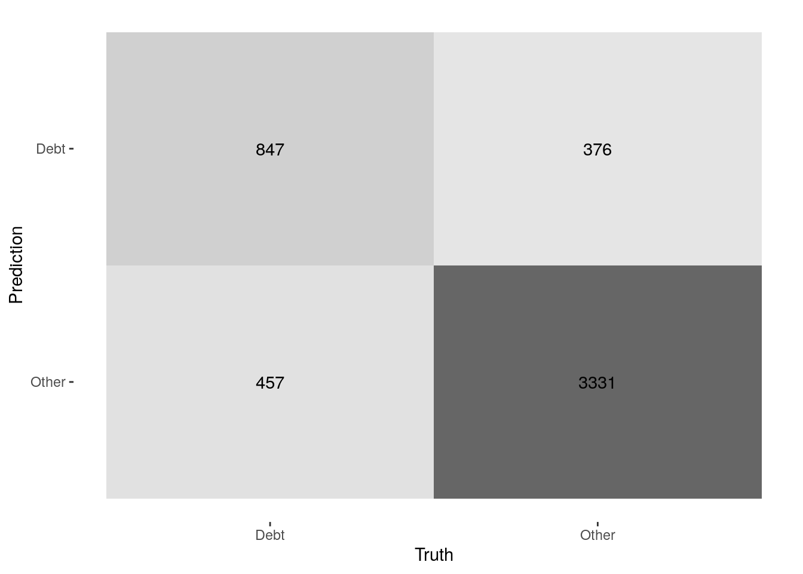
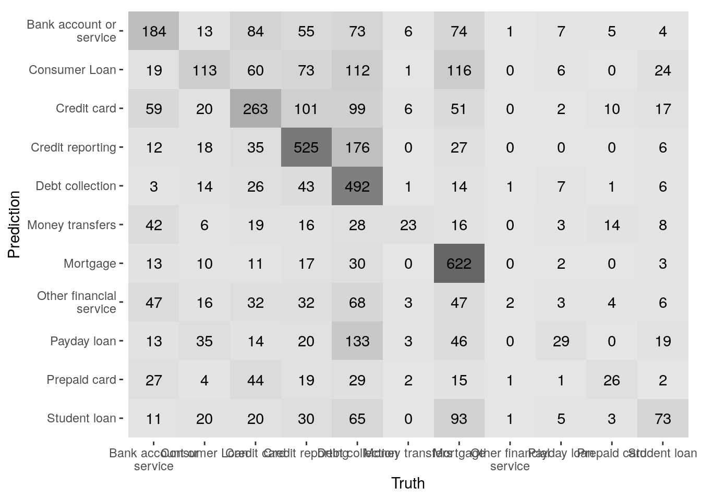
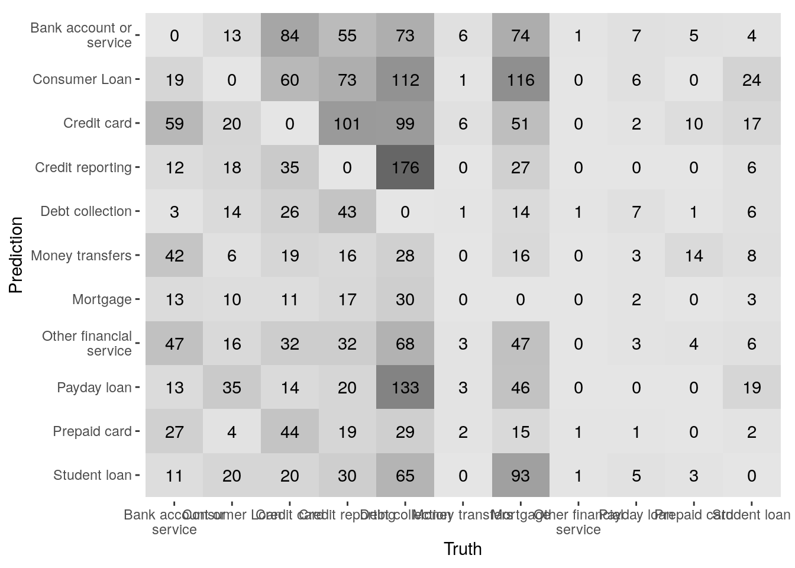

Clasificación de textos (I)
Consumer complaints
Magdiel Ablan
2020-09-09
1 Introducción
Vamos a construir un modelo de clasificación para el conjunto de datos de quejas de consumidores al buró de protección financiera de consumidores de EU. El conjunto se puede descargar del sitio de Kaggle. La fuente original de los datos es el CFPB
Aquí vamos a seguir de cerca el capítulo 7 del libro de Hvitfeldt and Silge
Leemos los datos y quitamos los registros con NA en la queja:
complaints <- read_csv("datos/consumer_complaints.csv", col_types =
cols(consumer_complaint_narrative = col_character(), company_public_response = col_character(),
consumer_consent_provided = col_character())) %>%
drop_na(consumer_complaint_narrative) %>%
mutate(date_received = parse_date_time(date_received,"mdY"))
glimpse(complaints)## Rows: 66,806
## Columns: 18
## $ date_received <dttm> 2015-03-19, 2015-03-19, 2015-03-19, 201…
## $ product <chr> "Debt collection", "Consumer Loan", "Mor…
## $ sub_product <chr> "Other (i.e. phone, health club, etc.)",…
## $ issue <chr> "Cont'd attempts collect debt not owed",…
## $ sub_issue <chr> "Debt was paid", NA, NA, NA, NA, NA, NA,…
## $ consumer_complaint_narrative <chr> "XXXX has claimed I owe them {$27.00} fo…
## $ company_public_response <chr> NA, NA, NA, NA, NA, "Company chooses not…
## $ company <chr> "Diversified Consultants, Inc.", "M&T Ba…
## $ state <chr> "NY", "VA", "CA", "CA", "CA", "CA", "CA"…
## $ zipcode <chr> "121XX", "221XX", "946XX", "900XX", "956…
## $ tags <chr> "Older American", "Servicemember", NA, "…
## $ consumer_consent_provided <chr> "Consent provided", "Consent provided", …
## $ submitted_via <chr> "Web", "Web", "Web", "Web", "Web", "Web"…
## $ date_sent_to_company <chr> "03/19/2015", "03/19/2015", "03/19/2015"…
## $ company_response_to_consumer <chr> "Closed with explanation", "Closed with …
## $ timely_response <chr> "Yes", "Yes", "Yes", "Yes", "Yes", "Yes"…
## $ `consumer_disputed?` <chr> "No", "No", "Yes", "Yes", "Yes", "No", "…
## $ complaint_id <dbl> 1290516, 1290492, 1290524, 1290253, 1292…Hay 66806 registros y 18 variables. Lo que queremos predecir es el producto al que se refiere la queja:
complaints %>%
group_by(product) %>%
tally() %>%
arrange(desc(n))## # A tibble: 11 x 2
## product n
## <chr> <int>
## 1 Debt collection 17552
## 2 Mortgage 14919
## 3 Credit reporting 12526
## 4 Credit card 7929
## 5 Bank account or service 5711
## 6 Consumer Loan 3678
## 7 Student loan 2128
## 8 Prepaid card 861
## 9 Payday loan 726
## 10 Money transfers 666
## 11 Other financial service 110Así luce la narrativa de las primeras quejas:
head(complaints$consumer_complaint_narrative,2)## [1] "XXXX has claimed I owe them {$27.00} for XXXX years despite the PROOF of PAYMENT I sent them : canceled check and their ownPAID INVOICE for {$27.00}! \nThey continue to insist I owe them and collection agencies are after me. \nHow can I stop this harassment for a bill I already paid four years ago? \n"
## [2] "Due to inconsistencies in the amount owed that I was told by M & T Bank and the amount that was reported to the credit reporting agencies, I was advised to write a good will letter in order to address the issue and request the negative entry be removed from my credit report all together. I had a vehicle that was stolen and it was declared a total loss by insurance company. The insurance company and the GAP insurancw companypaid the outstanding balance of the loan, but I was told by M & T Bank that there was still a balance due on the loan. In good faith, without having received any proof as to why there was still a balance, I made a partial payment towards the remaining debt. I then sent the goodwill letter still offering to pay the remainder of the debt, but in exchange for the removal of the negative entry on my credit report. At one point, in XXXX 2015, per my credit monitoring agency, it showed a delinquent balance of {$0.00}, but when I checked my credit report again on XXXX XXXX 2015, there was a delinquent balance of {$1400.00}. The monies from the GAP insurance and my insurance company has been paid, M & T Bank says that I still owe {$620.00}, of which {$210.00} has already been paid. I contacted M & T Bank via return receipt mail, but I have not been given the courtesy of a response yet. \n"Quitamos los caracteres de fin de línea:
fin_linea <- "\\n"
complaints$consumer_complaint_narrative <- str_replace_all(complaints$consumer_complaint_narrative,fin_linea,"")
head(complaints$consumer_complaint_narrative,2)## [1] "XXXX has claimed I owe them {$27.00} for XXXX years despite the PROOF of PAYMENT I sent them : canceled check and their ownPAID INVOICE for {$27.00}! They continue to insist I owe them and collection agencies are after me. How can I stop this harassment for a bill I already paid four years ago? "
## [2] "Due to inconsistencies in the amount owed that I was told by M & T Bank and the amount that was reported to the credit reporting agencies, I was advised to write a good will letter in order to address the issue and request the negative entry be removed from my credit report all together. I had a vehicle that was stolen and it was declared a total loss by insurance company. The insurance company and the GAP insurancw companypaid the outstanding balance of the loan, but I was told by M & T Bank that there was still a balance due on the loan. In good faith, without having received any proof as to why there was still a balance, I made a partial payment towards the remaining debt. I then sent the goodwill letter still offering to pay the remainder of the debt, but in exchange for the removal of the negative entry on my credit report. At one point, in XXXX 2015, per my credit monitoring agency, it showed a delinquent balance of {$0.00}, but when I checked my credit report again on XXXX XXXX 2015, there was a delinquent balance of {$1400.00}. The monies from the GAP insurance and my insurance company has been paid, M & T Bank says that I still owe {$620.00}, of which {$210.00} has already been paid. I contacted M & T Bank via return receipt mail, but I have not been given the courtesy of a response yet. "La serie de caracteres “XXX..” que vemos en el texto se usan para proteger la información personal de los consumidores. Hay que verificar siempre que mecanismo es el usado en el conjunto de datos con el que estamos trabajando.
Las cantidades monetarias están rodeadas por {}, como por ejemplo {$75.00}. Esto puede resultar conveniente si en algún momento queremos extraer esta información.
2 Un primer modelo de clasificación
Trataremos de predecir la variable product a las que se refieren las quejas. En una primera instancia, haremos la clasificación de forma binaria, tratando de determinar si una queja se refiere a “Debt collection” o no.
También hay que decidir que variables incluir como predictoras en el modelo. Por lo pronto incluiremos:
- La fecha (
date_received) - El texto de la queja (
consumer_complaint_narrative) - La etiqueta (
tags)
La etiqueta puede ser de tres tipos:
complaints %>%
group_by(tags) %>%
tally() %>%
arrange(desc(n))## # A tibble: 4 x 2
## tags n
## <chr> <int>
## 1 <NA> 55389
## 2 Older American 6083
## 3 Servicemember 4504
## 4 Older American, Servicemember 830Otra variable que podría ser interesante es la forma en la que se introdujo la queja pero en este caso no es útil porque todas son la misma:
complaints %>%
group_by(submitted_via) %>%
tally() %>%
arrange(desc(n))## # A tibble: 1 x 2
## submitted_via n
## <chr> <int>
## 1 Web 66806Reclasifiquemos product para que tenga solo dos niveles:
complaints2class <- complaints %>%
mutate(product = factor(if_else(product == "Debt collection",
"Debt" ,"Other"))
)Verifiquemos contando de nuevo cuantos registros en cada categoría:
complaints2class %>%
group_by(product) %>%
tally()## # A tibble: 2 x 2
## product n
## <fct> <int>
## 1 Debt 17552
## 2 Other 492542.1 División entrenamiento y prueba
Ahora, dividimos los datos en un conjunto de entrenamiento y prueba. Por defecto 75% de los datos se usan para entrenamiento y el restante 25% para prueba.
complaints_split <- initial_split(complaints2class, strata = product)
complaints_train <- training(complaints_split)
complaints_test <- testing(complaints_split)Verifiquemos las dimensiones de los conjuntos:
dim(complaints_train)## [1] 50105 18dim(complaints_test)## [1] 16701 18Una manera muy usada para evaluar el modelo es dividir el conjunto de entrenamiento en B remuestras, cada una de las cuales esta compuesta de un subconjunto de entrenamiento y un subconjunto de evaluación:
 (Fuente: Kuhn and Johnson (2020) )
(Fuente: Kuhn and Johnson (2020) )
El modelo se ajusta B veces y las medidas de rendimiento del modelo son el promedio de estos ajustes.
2.2 Preprocesamiento
Primero se especifica “la receta”, el conjunto de pasos necesarios para preparar nuestros datos para el modelo
2.2.1 La receta
Como los modelos a usar tienen atributos numéricos, tenemos que convertir las características del texto en datos numéricos.
Inicializamos el procesamiento usando:
complaints_rec <-
recipe(product ~ date_received + tags + consumer_complaint_narrative,
data = complaints_train
)Comencemos primero con la variable date_received. El siguiente código:
Extrae el mes y el día de la semana
Borra la fecha original
Convierte el mes y el día de la semana a variables indicadoras
complaints_rec <- complaints_rec %>%
step_date(date_received, features = c("month", "dow"), role = "dates") %>%
step_rm(date_received) %>%
step_dummy(has_role("dates"))Seguimos con la variable tags. Aquí:
Creamos la especificación para datos faltantes
Convertimos la variable a un tipo indicador
complaints_rec <- complaints_rec %>%
step_unknown(tags) %>%
step_dummy(tags)Finalmente, procesamos la variable que contiene las quejas. En este caso:
Tokenizamos en palabras
Removemos las palabras vacías
Seleccionamos solo las 500 variables más frecuentes
Calculamos tf-idf
complaints_rec <- complaints_rec %>%
step_tokenize(consumer_complaint_narrative) %>%
step_stopwords(consumer_complaint_narrative) %>%
step_tokenfilter(consumer_complaint_narrative, max_tokens = 500) %>%
step_tfidf(consumer_complaint_narrative)Una vez especificados los pasos, estamos listos para aplicar o preparar (prep) la receta
2.2.2 Preparar la receta
complaint_prep <- prep(complaints_rec)Otra forma alternativa de trabajar es definir un flujo de trabajo o workflow e incluir los pasos de preprocesamiento, el paso de aplicar el modelo, etc. en en el flujo de trabajo usando workflow:
complaint_wf <- workflow() %>%
add_recipe(complaints_rec)El siguiente paso es especificar el modelo
2.3 Clasificador bayesiano ingenuo (Naive Bayes classifier)
Es un modelo bastante usado en NLP porque permite el uso de muchas variables como las que se tiene cuando se procesa texto. Se basa en calcular la probabilidad de que un elemento se clasifique de cierta manera usando el teorema de Bayes. El adjetivo “ingenuo” se debe a que se presume que las diferentes variables son independientes una de la otra, lo cual no es una suposición muy realista en la mayoría de los casos.
2.3.1 Especificación del modelo
Primero especificamos el tipo de modelo y el motor con el cual lo vamos a ejecutar. Lo del motor se refiere a que hay mas de una librería en R que se puede utilizar para la misma tarea y en ese paso especificamos cual es la librería en particular que queremos usar
nb_spec <- naive_Bayes() %>%
set_mode("classification") %>%
set_engine("naivebayes")
nb_spec## Naive Bayes Model Specification (classification)
##
## Computational engine: naivebayesEn este paso finalmente ajustamos el modelo. Para eso añadimos al flujo de trabajo la especificación del modelo y llamamos a fit:
nb_fit <- complaint_wf %>%
add_model(nb_spec) %>%
fit(data = complaints_train)El siguiente paso es ver que tan bueno resulta el modelo comparando el ajuste con el conjunto de prueba. Sin embargo, es mejor hacer el ajuste usando una validación cruzada de diez pliegos, como discutimos antes.
2.3.2 Evaluación
Definimos los pliegos. Por defecto son 10, cada uno con el 90% de datos como entrenamiento y el 10% restante de evaluación
complaints_folds <- vfold_cv(complaints_train)
complaints_folds## # 10-fold cross-validation
## # A tibble: 10 x 2
## splits id
## <list> <chr>
## 1 <split [45.1K/5K]> Fold01
## 2 <split [45.1K/5K]> Fold02
## 3 <split [45.1K/5K]> Fold03
## 4 <split [45.1K/5K]> Fold04
## 5 <split [45.1K/5K]> Fold05
## 6 <split [45.1K/5K]> Fold06
## 7 <split [45.1K/5K]> Fold07
## 8 <split [45.1K/5K]> Fold08
## 9 <split [45.1K/5K]> Fold09
## 10 <split [45.1K/5K]> Fold10Actualizamos nuestro flujo de trabajo para incluir el modelo:
nb_wf <- workflow() %>%
add_recipe(complaints_rec) %>%
add_model(nb_spec)
nb_wf## ══ Workflow ══════════════════════════════════════════════════════════
## Preprocessor: Recipe
## Model: naive_Bayes()
##
## ── Preprocessor ──────────────────────────────────────────────────────
## 9 Recipe Steps
##
## ● step_date()
## ● step_rm()
## ● step_dummy()
## ● step_unknown()
## ● step_dummy()
## ● step_tokenize()
## ● step_stopwords()
## ● step_tokenfilter()
## ● step_tfidf()
##
## ── Model ─────────────────────────────────────────────────────────────
## Naive Bayes Model Specification (classification)
##
## Computational engine: naivebayesy ajustamos de nuevo el modelo esta vez usando validación cruzada
nb_rs <- fit_resamples(
nb_wf,
complaints_folds,
control = control_resamples(save_pred = TRUE)
)Ahora si recogemos las métricas que evaluan el modelo en todos los pliegos y sus respectivas predicciones:
nb_rs_metrics <- collect_metrics(nb_rs)
nb_rs_predictions <- collect_predictions(nb_rs)Las métricas principales son la precisión (accuracy) y el área bajo la curva ROC. Ambas métricas, mientras más cercanas a uno mejor.
nb_rs_metrics## # A tibble: 2 x 5
## .metric .estimator mean n std_err
## <chr> <chr> <dbl> <int> <dbl>
## 1 accuracy binary 0.740 10 0.00165
## 2 roc_auc binary 0.892 10 0.00194Podemos dibujar la curva ROC para el modelo:
nb_rs_predictions %>%
group_by(id) %>%
roc_curve(truth = product, .pred_Debt) %>%
autoplot() +
labs(
color = NULL,
title = "Receiver operator curve for US Consumer Finance Complaints",
subtitle = "Each resample fold is shown in a different color"
)
También podemos visualizar la matriz de confusión, en este caso, para el primer pliego
nb_rs_predictions %>%
filter(id == "Fold01") %>%
conf_mat(product, .pred_class) %>%
autoplot(type = "heatmap")
Veamos si es posible mejorar estos resultados con un modelo diferente
2.4 Modelo de máquinas de soporte vectorial (SVM)
Los modelos de máquinas de soporte vectorial son un tipo de modelo de aprendizaje automático que puede usarse en tareas de clasificación y regresión y que ha sido usado con éxito en tareas de clasificación de texto.
Comparemos el modelo anterior con este modelo a ver cual de los dos tiene mejor performace.
Igual que antes, especificamos el tipo de modelo y el motor de aprendizaje:
svm_spec <- svm_rbf() %>%
set_mode("classification") %>%
set_engine("liquidSVM")y definimos un nuevo flujo de trabajo con el mismo preprocesamiento y esta nueva especificación de modelo:
svm_wf <- workflow() %>%
add_recipe(complaints_rec) %>%
add_model(svm_spec)Ahora ajustamos el modelo. Como SVM no produce probabilidades como el modelo anterior, especificamos metricas un poco diferentes:
sensitivity: sensibilidad o tasa de verdaderos positivosspecificity: especificidad o tasa de verdaderos negativos
svm_rs <- fit_resamples(
svm_wf,
complaints_folds,
metrics = metric_set(accuracy, sensitivity, specificity),
control = control_resamples(save_pred = TRUE)
)Recopilamos las metricas del ajuste anterior:
svm_rs_metrics <- collect_metrics(svm_rs)
svm_rs_predictions <- collect_predictions(svm_rs)svm_rs_metrics## # A tibble: 3 x 5
## .metric .estimator mean n std_err
## <chr> <chr> <dbl> <int> <dbl>
## 1 accuracy binary 0.837 10 0.00189
## 2 sens binary 0.641 10 0.00623
## 3 spec binary 0.907 10 0.00173La precisión mejoró. Veamos ahora la matriz de confusión:
svm_rs_predictions %>%
filter(id == "Fold01") %>%
conf_mat(product, .pred_class) %>%
autoplot(type = "heatmap")
Mejoró también la separación entre las clases.
Ahora, pongamosle las cosas un poco más complicadas al modelo haciendo una clasificación múltiple
3 Clasificación multiple
set.seed(1234)
multicomplaints_split <- initial_split(complaints, strata = product)
multicomplaints_train <- training(multicomplaints_split)
multicomplaints_test <- testing(multicomplaints_split)multicomplaints_rec <-
recipe(product ~ date_received + tags + consumer_complaint_narrative,
data = multicomplaints_train
) %>%
step_date(date_received, features = c("month", "dow"), role = "dates") %>%
step_rm(date_received) %>%
step_dummy(has_role("dates")) %>%
step_unknown(tags) %>%
step_dummy(tags) %>%
step_tokenize(consumer_complaint_narrative) %>%
step_stopwords(consumer_complaint_narrative) %>%
step_tokenfilter(consumer_complaint_narrative, max_tokens = 500) %>%
step_tfidf(consumer_complaint_narrative) %>%
step_downsample(product)multicomplaints_folds <- vfold_cv(multicomplaints_train)multi_svm_wf <- workflow() %>%
add_recipe(multicomplaints_rec) %>%
add_model(svm_spec)
multi_svm_wf## ══ Workflow ══════════════════════════════════════════════════════════
## Preprocessor: Recipe
## Model: svm_rbf()
##
## ── Preprocessor ──────────────────────────────────────────────────────
## 10 Recipe Steps
##
## ● step_date()
## ● step_rm()
## ● step_dummy()
## ● step_unknown()
## ● step_dummy()
## ● step_tokenize()
## ● step_stopwords()
## ● step_tokenfilter()
## ● step_tfidf()
## ● step_downsample()
##
## ── Model ─────────────────────────────────────────────────────────────
## Radial Basis Function Support Vector Machine Specification (classification)
##
## Computational engine: liquidSVMmulti_svm_rs <- fit_resamples(
multi_svm_wf,
multicomplaints_folds,
metrics = metric_set(accuracy),
control = control_resamples(save_pred = TRUE)
)multi_svm_rs## # Resampling results
## # 10-fold cross-validation
## # A tibble: 10 x 5
## splits id .metrics .notes .predictions
## <list> <chr> <list> <list> <list>
## 1 <split [45.1K/5K]> Fold01 <tibble [1 × 3… <tibble [0 × 1… <tibble [5,011 × 3…
## 2 <split [45.1K/5K]> Fold02 <tibble [1 × 3… <tibble [0 × 1… <tibble [5,011 × 3…
## 3 <split [45.1K/5K]> Fold03 <tibble [1 × 3… <tibble [0 × 1… <tibble [5,011 × 3…
## 4 <split [45.1K/5K]> Fold04 <tibble [1 × 3… <tibble [0 × 1… <tibble [5,011 × 3…
## 5 <split [45.1K/5K]> Fold05 <tibble [1 × 3… <tibble [0 × 1… <tibble [5,011 × 3…
## 6 <split [45.1K/5K]> Fold06 <tibble [1 × 3… <tibble [0 × 1… <tibble [5,011 × 3…
## 7 <split [45.1K/5K]> Fold07 <tibble [1 × 3… <tibble [0 × 1… <tibble [5,010 × 3…
## 8 <split [45.1K/5K]> Fold08 <tibble [1 × 3… <tibble [0 × 1… <tibble [5,010 × 3…
## 9 <split [45.1K/5K]> Fold09 <tibble [1 × 3… <tibble [0 × 1… <tibble [5,010 × 3…
## 10 <split [45.1K/5K]> Fold10 <tibble [1 × 3… <tibble [0 × 1… <tibble [5,010 × 3…multi_svm_rs_metrics <- collect_metrics(multi_svm_rs)
multi_svm_rs_predictions <- collect_predictions(multi_svm_rs)multi_svm_rs_metrics## # A tibble: 1 x 5
## .metric .estimator mean n std_err
## <chr> <chr> <dbl> <int> <dbl>
## 1 accuracy multiclass 0.489 10 0.00564multi_svm_rs_predictions %>%
filter(id == "Fold01") %>%
conf_mat(product, .pred_class) %>%
autoplot(type = "heatmap") +
scale_y_discrete(labels = function(x) str_wrap(x, 20)) +
scale_x_discrete(labels = function(x) str_wrap(x, 20))
multi_svm_rs_predictions %>%
filter(id == "Fold01") %>%
filter(.pred_class != product) %>%
conf_mat(product, .pred_class) %>%
autoplot(type = "heatmap") +
scale_y_discrete(labels = function(x) str_wrap(x, 20)) +
scale_x_discrete(labels = function(x) str_wrap(x, 20))
4 Los mecanismos de anonimización
Referencias
Kuhn, Max, and Kjell Johnson. 2020. Feature Engineering and Selection a Practical Approach for Predictive Models. Chapman & Hall/CRC.